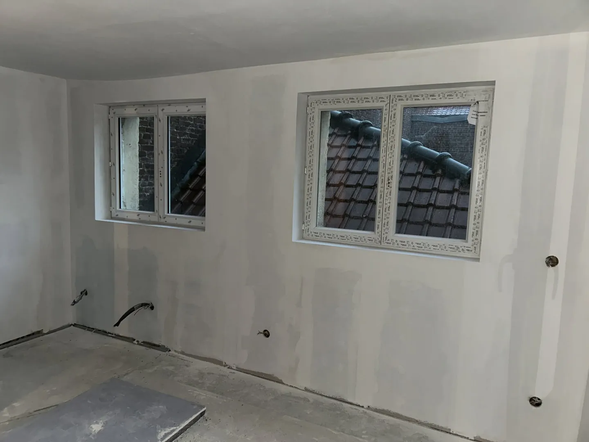

Plâtrerie & isolation · Mazinghem
Plâtrerie et isolation
à Mazinghem.
Pour vos travaux de plâtrerie ou d’isolation intérieure, décrivez-nous votre projet et échangeons sur les possibilités.
Aménager et rénover
Préparer votre intérieur
pour la suite.
La plâtrerie et l’isolation s’inscrivent souvent dans un ensemble de travaux. HabiTom Rénov intervient sur ces prestations dans le cadre de projets de rénovation à Mazinghem et aux alentours.
- Travaux de plâtrerie
- Isolation intérieure
- Enduits et préparation des surfaces
- Échange et devis personnalisé selon le chantier
